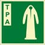
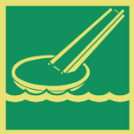
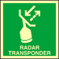
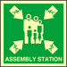
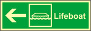
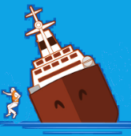
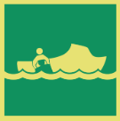
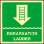

Все вопросы
| На какие суда не распространяется ПРАИМ-2013? |
- Буксируемые суда
- Самоходные суда |
| Что включает в себя понятие инцидент? |
- Лишение возможности движения судна 24ч и менее
- Посадка судна на мель и его нахождение на мели 24ч и менее |
| В каком документе изложен порядок расследований на море? |
- Праим-2013 |
| Что включает в себя понятие авария? |
- Гибель двух человек и более
- Лишение возможности движения судна 24ч и менее |
| Что включает в себя понятие очень серьезная травма? |
- Гибель буксируемого судна
- Гибель судна
- Гибель двух и более человек |
| Должен ли спасательный жилет обеспечиваться каким-либо средством для осуществления связки людей? |
- Да |
| Температура воды +4С позволяет ли гидрокостюм, изготовленный из материала, обладающий теплоизоляционными свойствами, находится в воде в течение 6 часов? |
- Да |
| В течение какого времени обеспечивается достаточная теплозащита человека в воде в гидрокостюме изготовленном из материала, не обладающего теплоизоляционными свойствами, при температуре воды +5 градусов |
- Не менее часа |
| За какое время согласно требованиям конвенции СОЛАС-74 должен быть надет гидрокостюм без посторонней помощи? |
- Не более двух минут |
| Требуется ли снимать спасательный жилет перед тем, как залезть в спасательный плот (шлюпку) из воды? |
- Нет |
| Автоматически действующая дымовая шашка, прикрепленная к спасательному кругу, должна давать дым как минимум |
- 15 минут |
| Допускает ли конструкция гидрокостюма прыжок в воду с высоты 3,5м без повреждения или смещения при этом гидрокостюма или его оборудования и без телесных повреждений? |
- Да |
| На судне спасательные круги должны размещаться |
- На всех открытых палубах |
| Можно ли сбрасывать контейнер спасательного плота в воды с высоты 25м безопасно для оборудования и конструкции плота |
- Да, только при условии, что плот испытан для сбрасывания с этой высоты |
| На каждом грузовом судне должны быть предусмотрены коллективные спасательные средства следующих типов |
- Дежурные шлюпки
- Спасательные плоты
- Спасательные шлюпки |
| Можно ли сбрасывать контейнер спасательного плота в воды с высоты 15м безопасно для оборудования и |
- Да |
| Укажите, какие спасательные жилеты могут поставляться на суда? |
- Для младенцев, детей и взрослых |
| Спасательные круги, используемые на судах, оснащаются |
- Дымовой шашкой
- Спасательным линем
- Самозажигающимся огнем |
| Самозажигающийся огонь на спасательном круге после включения должен гореть не менее чем |
- 2 часа |
| За какой промежуток времени нужно надеть спасательный жилет? |
- 60 секунд |
| Выберите правильный способ ручного запуска системы газонаполнения надувного спасательного жилета? |
- Дернуть за пусковой шнур системы газозаполнения |
| С какой максимальной высоты можно сбрасывать спасательный круг с самозажигающимся огнем не опасаясь его повреждения |
- 30 метров |
| Применяются ли на грузовых судах спасательные плоты вместимостью менее 6 человек? |
- НЕ применяются |
| Какие типы спасательных средств считаются индивидуальными? |
- Гидрокостюмы
- Спасательный круг
- Спасательный жилет |
| На какие суда не распространяется ПРАИМ-2013? |
- Буксируемые суда
- Самоходные суда |
| Посадка людей в спасательную шлюпку на грузовом судне должна быть совершена в течение… с момента подачи команды к посадке |
- Не более 3 минут |
| Выберите типы используемых на судах спасательных шлюпок по способу доставки на воду? |
- Спускаемыми механическими средствами
- Спускаемые свободным падением |
| Продолжительность горения сигнального огня спасательного жилета составляет |
- Не менее 8 часов |
| Какой вес должен иметь спасательный круг, если он должен быть укомплектован светодымящимся буем? |
- Не менее 4 кг |
| Можно ли в спасательном жилете прыгать, наложив руки на жилет, с высоты 2,5м без получения телесных повреждений и при этом – без смещения или повреждения жилета или его оборудования? |
- Да |
| Пусковое устройство и приспособления моторных спасательных шлюпок должны обеспечивать пуск двигателя при температуре окружающей среды минус 15 С в течение |
- 2мин |
| Какие виды спасательных жилетов испльзуются на морских судах? |
- Надувные и жесткие |
| В штатное снабжение спасательного плота входит |
- Две губки
- Ручно насос
- Плавучий безопасный нож
- Комплект ремонтных принадлежностей
|
| Сколько суток надувной спасательный плот способен оставаться на плаву? |
- 30 суток |
| На какое количество человек в спасательной шлюпке имеются теплозащитные средства? |
- 10% от общего числа людей |
| Укажите информационные материалы, которые входят в обычное снабжение спасательной шлюпки |
- Таблица спасательных сигналов
- Инструкция по сохранению жизни
|
| Какие пиротехнические средства находятся внутри каждой спасательной шлюпки? |
- Парашютные ракеты, фальшфейеры, дымовые шашки |
| Для удержания спасательного плота у борта судна следует использовать |
- Фалинь |
| Какое количество пресной воды упаковано внутри спасательного плота из расчета на одного человека |
- 1,5 литра на человека |
| Сколько комплектов аптечки первой помощи упаковано внутри спасательного плота? |
- Один комплект на всех |
| Есть ли в спасательной шлюпки рыболовные принадлежности? |
- Да |
| Укажите инструкции, которые входят в обычное снабжение спасательного плота |
- Инструкция по сохранению жизни
- Инструкция по немедленным первоочередным действиям после посадки в спасательный плот |
| Для подъёма людей в спасательную шлюпку из воды используют |
- Посадочный трап |
| Снабжение спасательной шлюпки должно включать пресную воду из расчета… литров на каждого человека |
- 3 литра |
| Плавучий нож, предназначенный для экстренного обрезания фалиня, в спасательном плоту находится |
- Снаружи на тенте плота |
| Входят ли теплые одеяла в перечень снабжения спасательной шлюпки? |
- Нет |
| Штатное устройство для сбора дождевой воды на надувном спасательном плоту находится |
- На тенте плота |
| (TPA) Символ, изображённый на рисунке, обозначает |
- Место хранения теплозащитных средств |
| Выберите правильные действия при выполнении прыжка в воду с высоты в спасательном жилете? |
- Глубоко вдохнуть и прыгать ногами вперед, соединив их
- Осмотреть место приводнения
- Прижать к груди спасательный жилет, чтобы исключить травмы при рывке от удара о воду
- Голову держать прямо, чтобы не удариться лицом о воду |
| Символ, изображённый на рисунке, обозначает |
- Место установки эвакуационного спуска |
| Что такое каютная карточка |
- Выписка из судового расписания по тревоге для конкретного члена экипажа |
| По команде оставить судно следует |
- Занять своё место в шлюпке
- Надеть спасательные жилеты, приготовить спасательные шлюпки или плоты к спуску
|
| Команду об оставлении судна может подать |
- Капитан судна |
| (lifejacket) Символ, изображённый на рисунке, обозначает |
- Место хранения спасательного жилета |
| (epirb) Символ, изображённый на рисунке, обозначает |
- Место установки аварийного радио буя |
| (radar transponder) Символ, изображённый на рисунке, обозначает |
- Место хранения судового радиолокационного ответчика |
| (assembly station) Символ, изображённый на рисунке, обозначает |
- Место сбора пассажиров по тревоге |
| (lifeboat) Символ, изображённый на рисунке, обозначает |
- Направление движения по коридору к спасательной шлюпке
!Если на изображении нет стрелки, ответ: Место установки спасательной шлюпки
|
| На каком рисунке изображен наиболее безопасный способ оставления судна? |
 |
| Символ, изображённый на рисунке, обозначает |
- Место хранения спасательных гидрокостюмов |
| Символ, изображённый на рисунке, обозначает |
- Место установки спасательного круга |
| Символ, изображённый на рисунке, обозначает |
- Место установки дежурной шлюпки |
| (embarkation ladder) Символ, изображённый на рисунке, обозначает |
- Место установки штормтрапа для спуска на шлюпку |
| Символ, изображённый на рисунке, обозначает |
- Место хранения парашютных ракет |
| Символ, изображённый на рисунке, обозначает |
- Место расположения надувного спасательного плота |
| Символ, изображённый на рисунке, обозначает |
- Место хранения дестких спасательных жилетов |
| По шлюпочной тревоге необходимо |
- Одеться по сезону
- Выйти к месту сбора
- Надеть спасательный жилет |
| Экипаж покинул судно, терпящее бедствие. УКВ радиостанция включена в спасательном плоту и используется для того чтобы привлечь внимание судов, которые могут находиться в данном районе. Укажите на какой канал должна быть настроена УКВ радиостанция для передачи сигнала бедствия MAYDAY |
- УКВ канал 16 |
| Укажите меры безопасности, которые целесообразно применять при нахождении в шлюпке в местах возможного появления акул |
- Не опускать в воду руки и ноги
- Не опускать в воду блестящие предметы
- Не опускать в воду окровавленные предметы
- При приближении акулы стараться ударить ее по глазам багром
|
| Можно ли пить морскую воду? |
- Категорически запрещено |
| Для уменьшения потери тепла, находясь в воде, следует |
- Сжаться комочком и подтянуть ноги к груди
- По возможности как можно меньше двигаться
- Не стараться плыть к шлюпке, а ждать когда она подойдет
|
| Выберите основные опасности, угрожающие терпящим бедствие |
- Все варианты |
| Как используются запасы воды и пищи на спасательном плоту первые сутки? |
- В режиме экономии |
| Можно ли нормально дышать внутри плота, если закрыть оба входа? |
- Да |
| При какой температуре тела наступает крититическая степень гипортермии? |
- При 30 градусах и ниже |
| Известно, что при нахождении человека в воде его тело остывает существенно быстрее чем на воздухе. Во сколько раз вода быстрее забирает тепло человеческого организма, чем воздух? |
- Более чем в 20 раз |
| Укажите наиболее надежные признаки, по которым находясь в спасательном средстве, можно определить факт смерти человека |
- Отсутствие дыхания
- Не прощупывается пульс
- Зрачки расширены и не реагируют на свет фонаря
|
| На какие суда не распространяется ПРАИМ-2013? |
- Буксируемые суда
- Самоходные суда |
| Какое штатное оборудование предназначено для управления закрытой спасательной шлюпкой на ходу? |
- Руль
- Румпель |
| Можно ли использовать для еды мясо пойманных при нахождении в спасательном средстве морских птиц? |
- Да |
| Резкому усилению потерь тепла организмом при нахождении человека в плоту способствует |
- Ветер |
| Спасательные вертолеты оборудованы подъемными устройствами для подбора людей из воды, снятия с аварийного судна или спасательного средства. Во избежание опасного для жизни разряда статического электричества прикасаться к опускаемому с вертолета средства можно |
- После того как подъемное устройство имело контакт с судовыми конструкциями или водой |
| НЕ пригодны для еды морские рыбы |
- Раздувшиеся и колючие
- С острыми наростами вместо чешуи
- С шипами и колючими иглами на теле
|
| Какие действия необходимо предпринять для привлечения к себе внимания, находясь в воде |
- Воспользоваться свистком |
| Как спасти от переохлаждения весь экипаж спасательной шлюпки при отсутствии должного количества теплозащитных мешков |
- Делать простейшие движения руками и ногами
- Всем улечься на дно плавсредства и плотно прижаться друг к другу
|
| Наиболее опасные последствия морской болезни для человека, находящегося на аварийном спасательного средстве |
- Рвота и обезвоживание организма
- Повышение чувствительности к гипотермии
|
| Уменьшить влияние жары на людей спасательном средстве можно |
- Смачиванием тента забортной водой
- Смачиванием одежды забортной водой
- Нахождением в тени паруса или борта шлюпки
|
| Для уменьшения дрейфа и бортовой качки спасательной шлюпки следует |
- Держаться против волны, использую плавучий якорь |
| Закончив посадку в спасательную шлюпку, следует немедленно |
- Вести наблюдение за водной поверхностью
- Вести наблюдение за палубой и надстройкой
- Отойти от борта судна на безопасное расстояние
|
| Какие способы, из числа указанных в ответах, наиболее безопасны для попадания на надувной спасательный плот, стоящий у борта судна? |
- Спуститься по штормтрапу
- Спуститься по тросу с мусингами
|
| В случае отсутствия питьевой воды на спасательном средстве ее можно заменить |
- Конденсатом
- Собранной дождевой водой
- Влагой из пойманной рыбы
|
| Чем тушатся небольшие очаги возгорания? |
- Переносными средствами пожаротушения |
| ..... - быстрое сгорание паров горючего вещества с воздухом при поднесении к жидкости пламени или горячего тела. Сама жидкость останется не сгоревшей. (Дайте определение) |
- Вспышка |
| ..... - воспламенение горючего вещества в результате саморазогрева при нормальных внешних условиях.(Дайте определение) |
- Самовозгорание |
| Пожарный тетраэдр это |
- Цепная реакция
- Горючее вещество
- Окислитель
- Источник тепла |
| Какие недостатки присущи воде, как огнетушащему веществу |
- Электропроводимость
- Снижает остойчивость судна |
| ..... - быстропротекающий физический или физико-химический процесс, проходящий со значительным выделением энергии в небольшом объеме за короткий промежуток времени и приводящий к ударным, вибрационным и тепловым воздействиям на окружающую среду вследствие высокоскоростного расширения. (Дайте определение) |
- Взрыв |
| Какие факторы пожара являются опасными для человека? |
- Дым
- Пламя
- Газы (вредные примеси)
- Теплота (высокая температура)
|
| Кто на судне информируется о наиболее эффективных, рекомендуемых и запрещенных средствах тушения опасных грузов? |
- Все члены экипажа |
| .... - устойчивое горение твердых и жидких веществ под воздействием открытого источника огня. (Дайте определение) |
- Самовоспламенение |
| Что нужно учитывать при тушении пожаров углекислым газом |
- Опасность отравления людей
- Невозможность тушения материалов, содержащих кислород
- Низкую эффективность тушения пожаров на открытом воздухе
- Необходимость поддержания заданной концентрации в замкнутом объёме
|
| Возгорание горючего вещества без поднесения к нему открытого источника огня. (Дайте определение) |
- Самовоспламенение |
| Где должны располагаться ручные пожарные извещатели |
- В каждой пожарной зоне |
| Автоматические извещатели пожара должны срабатывать от воздействия |
- Дыма
- Пламени
- Высокой температуры воздуха
|
| Пиротехнические средства должны храниться |
- На верхнем мостике в металлических закрытых шкафах |
| Установки пенотушения используются для защиты |
- Помещений с установками жидкого топлива
- Помещений с котлами
|
| Для тушения судовых пожаров применяются |
- Пенные огнетушители
- Порошковые огнетушители
- Углекислотные огнетушители
|
| При тушении пожаров электрооборудования под напряжением в первую очередь необходимо |
- Обесточить аварийное помещение и оборудование |
| При поверхностном способе тушения пожаров используются |
- Вода
- Пена |
| При тушении пожара за бортом судна необходимо |
- Охлаждать борт судна водой
- Вывести судно из опасного района
- Отгонять горящую поверхность от борта судна компактной струёй воды
- Заполнить поверхность воды между судами воздушно механической пеной
|
| На какие суда не распространяется ПРАИМ-2013? |
- Буксируемые суда
- Самоходные суда |
| Тушение горящих взрывчатых веществ производится |
- Водой |
| Горящее обесточенное электрооборудование для избежания его порчи рекомендуется гасить |
- Углекислотой |
| В каком случае разведчики должны немедленно выйти из опасной зоны? |
- При заметном повышении температуры вдыхаемого человека
- При ухудшении самочувствия кого-либо из членов аварийной партии
- При появлении затруднения дыхания |
| Что необходимо сделать при поступлении пара в машинное отделение? |
- Вывести людей из помещений
- Спустить людей на нижний ярус
- Отключить поврежденный участок паропровода
|
| На какие суда не распространяется ПРАИМ-2013? |
- Буксируемые суда
- Самоходные суда |
| Укажите меры предосторожности, которые необходимо соблюдать при проведении разведки пожара |
- Двери и люки открывать медленно и осторожно
- Осуществлять контроль за состоянием других членов аварийной партии
|
| Каждый член экипажа обнаруживший пожар или его признаки обязан |
- Сообщить на мостик и приступить к ликвидации пожара |
| Чем рекомендуется тушить горящее жидкое топливо? |
- Пеной
- Порошковыми составами
- Мелкораспыленной водой
|
| Какие меры являются наиболее важными при обнаружении пожара кем-либо из членов экипажа |
- Доклад на главный командный пункт
- Предотвращение возможности взрывов
- Предотвращение распространения огня
- Энергичная борьба с огнем всеми имеющимися средствами
|
| Члены экипажа до выполнения возложенных обязанностей по противопожарной защите судна должны пройти инструктаж |
- О символах, знаках безопасности
- Об использовании переносных огнетушителей
- По открытию и закрытию противопожарных дверей
- О сигналах аварийно-предупредительной сигнализации
|
| Какие огнетушащие средства можно использовать для тушения горящего топлива? |
- Пену различной кратности
- Распыленную водяную струю
- Порошковые огнетушители
|
| Пена является наиболее эффективным средством для тушения |
- Нефтепродуктов |
| Какие меры предосторожности необходимо применять перед входом в помещение с опасными грузами, способными выделять ядовитые, едкие или воспламеняющиеся пары? |
- Произвести контроль газовоздушной среды |
| Запас воздуха в дыхательном аппарате, который входит в комплект снаряжения пожарного, должен обеспечить безопасную работу в течение, как минимум |
- 30 минут |
| Какие средства пожаротушения можно использовать для тушения генераторов электрического тока под напряжением? |
- Переносные углекислотные или порошковые огнетушители |
| Наибольший эффект при тушении пожаров углекислым газом достигается |
- Во всех замкнутых объёмах |
| Для тушения горящего топлива с использованием мелкораспыленной воды распыленные струи следует подавать |
- Под пламя |
| Согласно требованием ИМО минимальное количество дыхательных аварийных устройств (аппаратов EEBD) на каждой палубе любого типа грузового судна должно составлять |
- НЕ менее 2-х |
| Аварийные дыхательные устройства (аппаратов EEBD) должны иметь запас воздуха, достаточный для обеспечения дыхания персонала в течение некоторого времени. Укажите минимально допустимую продолжительность |
- 10 минут |
| Одновременное использование мелкораспыленной воды и пены для тушения горящего топлива |
- Не допускается |
| Для тушения горящего топлива с использованием пены ее следует подавать |
- На край участка пожара, постепенно перемещая к центру и покрывая всю горящую поверхность |
| На судне снаряжение для пожарного должно храниться |
- В специально отведенных местах |
| Горящее под напряжением электрооборудования можно гасить |
- Углекислотой |
| Укажите маркировки судовых дверей, крышек люков и горловин, которые всегда должны находиться в задраенном положении |
 |
| Укажите маркировки судовых дверей, крышек люков и горловин, которые по общесудовой (пожарной) тревоге должны быть задраены |
 |
| При тушении пожаров на открытых палубах и надстройках можно использовать |
- Можно использовать и пену и воду, но не вместе |
| Первая помощь.
При попадании инородного тела в дыхательное горло и наступлении асфиксии следует…
|
- Резко и сильно надавите на живот пострадавшего в направлении снизу вверх (Приём Геймлиха) |
| Первая помощь.
Первое действие при носовом кровотечении
|
- Плотно прижать крыло носа, из которого идёт кровотечение |
| Первая помощь.
Признаками травматического шока у пострадавшего является
|
- Частый слабый пульс
- Бледность кожи и губ
- Заторможенность пострадавшего
- Снижение артериального давления
|
| Что такое гипотермия? |
- Понижение температуры тела |
| Первая помощь.
Первая медицинская помощь при электротравме
|
- При остановке сердца делать не прямой массаж
- Если пострадавший не дышит, преступить к искусственному дыханию
- При наличии сознания у пострадавшего поместить его в судовой лазарет
- Обесточить оборудование, токонесущие элементы, провода и т. д., с которыми соприкасается пострадавший
- Если пострадавший дышит, охладить обожжённые участки тела холодной водой и закрыть их чистой сухой не ворсистой тканью
|
| Первая медицинская помощь при ранах |
- Все перечисленные в ответах мероприятия |
| Для переноски пострадавшего с подозрением на перелом позвоночника допускается положить пострадавшего... |
- На носилки Нейла-Робертсона
- На широкую деревянную доску |
| Что делать, если судороги ноги возникли во время нахождения в воде? |
- Энергично массировать сведенные мышцы
- Несколько раз ущипнуть или уколоть больное место
- Постараться выпрямить сведенную ногу при помощи рук
|
| Отметьте правильные действия первой медицинской помощи при отморожениях |
- Нельзя отогревать конечность, распологая ее близко к открытому огню. Остальные действия правильные |
| Первая помощь.
Отметьте действия, которые должны быть выполнены при проведении искусственного дыхания
|
- Грудная клетка больного должна подниматься в момент искусственного вдоха
- Плотно обхватить своими губами рот пострадавшего и сделать энергичный выдох
- Откинуть голову пострадавшего назад, наложив свои руки на его лоб, другую – под шею. При этом дыхательные пути становятся проходимыми, т.к. корень языка отходит от задней стенки глотки
- Выдох у больного происходит пассивно
|
| Первая помощь.
При переломе конечности надувные шины можно использовать
|
- Для эвакуации в госпиталь в первые сутки
- Для перемещения пострадавшего в пределах судна
|
| Первая помощь.
При обнаружении пострадавшего во всех случаях необходимо
|
- Послать за помощью
- Обеспечить собственную безопасность
- Начать оказывать помощь тому, кто находится в более тяжёлом состоянии
|
| Первая помощь.
Укажите максимально срок, на который допускается накладывать жгут на конечность при артериальном кровотечении
|
- Не более 2-х часов |
| Как следует осуществлять подъем на вертолет человека с гипотермией? |
- В горизонтальном положении |
| Первая помощь.
Что нужно сделать в случае, если пострадавший упал в обморок?
|
- Уложить на спину и приподнять ноги |
| Первая помощь.
Обязательным требованием при наложении шины на повреждённую конечность при переломе является
|
- Иммобилизация повреждённой конечности с фиксацией ниже и выше суставов от предполагаемого места перелома |
| Первая помощь.
Первая помощь при отморожении
|
- Прекратить дальнейшее охлаждение
- Дать 250 мг аспирина (0.5 таблетки)
- Положить сухую согревающую асептическую повязку
- Пострадавшего обдувать тёплым воздухом
- Анальгетики при выраженном болевом синдроме
|
| Признаками смерти являются |
- Отсутствие сознания
- Глазные яблоки сухие и мутные
- Отсутствие самостоятельного дыхания
- Отсутствие пульсации сонной артерии
- Зрачки расширены и на свет не реагируют |
| Первая помощь.
Укажите, что необходимо предпринять в первую очередь, если Вы обнаружили пострадавшего, который находится в замкнутом помещении
|
- Сообщить об инциденте на мостик |
| Первая помощь.
Какие действия следует предпринять для восстановления температуры тела переохлаждённого человека, если нет тёплого одеяла или запасной сухой одежды (при нахождении в спасательном средстве) и пострадавший находится в сознании?
|
- Снять одежду с пострадавшего, отжать и снова одеть на пострадавшего |
| Отметьте правильные утверждения относительно гипотермии (переохлаждения) легкой степени |
- Все варианты кроме алкоголя |
| Первая помощь.
Укажите действия, которые необходимо выполнить при оказании первой медицинской помощи при ожогах
|
- Давать обильное питье, если нет ожога дыхательных путей
- Обожжённые места немедленно охладить проточной холодной водой
- Загасить пламенеющую одежду, освободить пострадавшего от тлеющей одежды
- Снять боль у пострадавшего (парацетамол, при сильных болях - морфин, трамадол)
- Наложить антисептическую повязку или накрыть обожжённые участки сухой не ворсистой тканью и осторожно прибинтовать её
|
| Первая помощь.
Отметьте правильное действия в случае обнаружения у пострадавшего гипертермии (перегревании)
|
- При судорогах дать медикаменты
- Обернуть пострадавшего холодной простыней
- Устранить гипертермию физическими средствами
- Прекратить действие высокой температуры на пострадавшего
- При клинической смерти выполнить сердечно-лёгочную реанимацию
|
| Что такое гипертермия? |
- Перегрев организма |
| Первая помощь.
Укажите ранние симптомы теплового удара у пострадавшего, выполнявшего работы во влажной тёплой атмосфере
|
- Учащённый пульс
- Головная боль, слабость
- Кожа пострадавшего горячая, красная и сухая
|
| Первая помощь.
При наличии в коллективном спасательном средстве пострадавшего с переломом конечности (подозрением на перелом) для иммобилизации конечности следует использовать
|
- Импровизированную шину из подручного материала
- Привязывание сломанной конечности к здоровой части тела
|
| Три продолжительных сигнала звонком громкого боя означают |
- Человек за бортом |
| Учения по судовым тревогам на грузовых судах должны проводиться не реже одного раза |
- В месяц |
| Учения по судовым тревогам на пассажирских судах должны проводиться не реже одного раза |
- В неделю |
| Главной задачей в ситуации, грозящей судну гибелью, является |
- Спасение людей |
| Звуковым сигналом общесудовой тревоги является |
- Семь коротких и один продолжительный звуковые сигналы |
| Выберите правильный способ подачи спасательного круга человеку за бортом |
- Как можно ближе к человеку, но не на него |
| Укажите действия, которые должен выполнить член экипажа, заметивший человека за бортом |
- Бросить спасательный круг
- Вести за ним наблюдение, указывать на него рукой
- Голосом объявить "Человек за бортом" |
| В каюте каждого члена экипажа должны храниться |
- Каютная карточка, содержащая выписку из расписания по тревогам |
| Кто отвечает за проведение систематических осмотров и проверок стационарных средств борьбы за живучесть судна? |
- Командный состав по заведованию |
| Символ изображенный на рисунке, обозначает |
- Медпункт |
| Стояночное расписание по общесудовой тревоге находиться |
- На видном месте у трапа |
| Кто может привлекаться для осуществления мероприятий по борьбе за живучесть судна? |
- Все члены экипажа
- Лица не входящие в состав штатного экипажа временно находящиеся на судне
|
| В каютной карточке пассажира должно быть указано |
- Место сбора по тревоге
- Значение сигналов тревог
- Номер и место нахождения его в спасательной шлюпке
|
| Сигнал, состоящий из 7 коротких и 1 длинного звука звонком громкого боя означает |
- Шлюпочную тревогу
- Общесудовую тревогу
|
| Каждый вновь прибывший член экипажа должен не позднее, чем через 2 недели после прибытия на судна получить инструктаж |
- По использованию спасательных средств
- По использованию средств пожаротушения
|
| В каком случае проводятся внеочередные учения по использованию спасательных средств? |
- Если более 25% экипажа не принимали участия в предыдущем учении |
| Борьба экипажа за непотопляемость судна организуется капитаном в соответствии с Информацией об аварийной остойчивости и посадке судна включает следующие действия экипажа: |
- Объявление общесудовой тревоги и задействование аварийной партии |
| Наличие воды в соседнем отсеке может быть определено по следующим признакам: |
- Фильтрация воды из смежного отсека через имеющиеся неплотности в переборках: шум воздуха, выходящего через воздушные измерительные трубы |
| Укажите под какой буквой на рисунке изображена аварийная струбцина |
- Б |
| Для чего применяется мягкий пластырь? |
- Для временной заделки пробоин в подводной части корпуса |
| Укажите под какой буквой на рисунке изображен раздвижной упор |
- А |
| Совокупность действий экипажа, направленных на поддержание и восстановление плавучести и остойчивости судна, понимается как ....(дайте определение) |
- Борьба за непотопляемость |
| ..... - способность судна оставаться на плаву и не опрокидываться при повреждении его корпуса и затоплении одного или нескольких отсеков |
- Непотопляемость |
| Перечислите что относится к аварийным материалам |
- Брусья и доски
- Клинья и пробки
- Цемент
- Жидкое стекло
- Песок
- Сурик
- Парусина
- Войлок
- Пакля
- Гвозди
- Скобы
- Проволока
- Резина листовая |
| Перечислите что относится к аварийному инвентарю |
- Пластыри
- Подушки с куделью
- Шпигованный мат
- Раздвижные упоры
- Струбцины
- Специальные болты |
| Лаки и краски на судне должны хранится |
- В малярной |
| Техника безопасности.
Работы в замкнутых помещениях В срочных случаях и когда нет уверенности, что состав воздуха безвреден для направляемых в закрытые помещения людей, работы
|
- Должны производиться в изолирующих средствах защиты органов дыхания |
| Техника безопасности.
Проверку отсутствия напряжения 220 В 50 Гц в судовой сети правила техники безопасности допускают производить с использованием
|
- Переносного вольтметра
- Прибора «Указатель напряжения» заводского исполнения
|
| Техника безопасности.
Наличие людей в рабочей шлюпке в процессе её спуска (подъёма)
|
- Запрещено |
| Техника безопасности.
Выполнение кратковременных работ на высоте (смена ламп, замена фалов и т. п.) с использованием вертикального трапа или скоб-трапа
|
- Допускается, при этом страховочный строп предохранительного пояса должен быть закреплён за прочные судовые конструкции |
| Техника безопасности.
К работам на высоте должны быть отнесены все судовые работы, выполняемые на расстоянии… м и более от палубы, настила, поверхности воды и т. п.
|
- 1,3 метра |
| Техника безопасности.
Производство забортных работ между бортами двух стоящих лагом судов или между бортом и причалом
|
- Запрещено |
| Техника безопасности.
Работы в замкнутых помещениях. Укажите индивидуальные средства защиты, которые должен использовать входящий в замкнутое помещение
|
- Каска
- Предохранительный пояс с лямками и страховочным канатом, второй конец которого должен находиться у наблюдающего вне помещения
|
| Техника безопасности.
При выполнении любых верхолазных работ использование другого члена экипажа для наблюдения и страховки
|
- Обязательно |
| Техника безопасности.
Все члены экипажа, участвующие в швартовных работах, должны быть
|
- В защитных касках
- Одеты в соответствующую спецодежду и спецобувь
- В спасательных жилетах
|
| Техника безопасности.
В штормовую погоду выход на открытые палубы
|
- Допускается группами, состоящими не менее чем из двух человек, с разрешения капитана под общим руководством старшего помощника капитана |
| Техника безопасности.
Укажите первое действие, которое должно быть выполнено при поражении пострадавшего электрическим током
|
- С надлежащими предосторожностями освободить пострадавшего от действия тока |
| Техника безопасности.
Укажите средства индивидуальной защиты, которые должны быть использованы при производстве работ на высоте на судне
|
- Защитная каска
- Предохранительный пояс со страховочным канатом
- Спасательный жилет
|
| Кто даёт разрешение на ремонтные работы, связанные с применением открытого огня? |
- Капитан судна |
| Что понимается под термином «особый район» в отношении требований МК МАПРОЛ 73/78? |
- Морской район, где необходимо принятие особых методов предотвращения загрязнения моря |
| Судно находится на удалении 20 миль от ближайшего берега вне пределов особого района. Могут ли пищевые отходы и мусор (бумага, ветошь, стекло) быть выброшены за борт? |
- Да |
| В каких случаях МК МАПРОЛ 73/78 разрешает выбрасывание за борт вредных веществ, перевозимых в упаковке |
- При необходимости обеспечения безопасности судна и сохранения человеческой жизни |
| Судам, находящимся на акватории морского порта РФ или подходах к нему сливать за борт судна сточные воды |
- Запрещено, за исключением случаев, установленных правилом 11 главы 3 Приложения Ⅳ к Международной конвенции МАРПОЛ |
| Судам, находящимся на акватории морского порта РФ или подходах к нему выбрасывать за борт судна пищевые отходы |
- Запрещено |
| Судно находится на удалении 15 миль от ближайшего берега в пределах особого района. Может ли мусор, включая бумагу, ветошь, стекло, быть выброшен за борт? |
- Нет |
| В пределах особых районов запрещается сбрасывать за борт измельченных пищевые отходы на расстоянии от берега менее |
- 12 миль |
| Что из перечисленного в ответах подпадает под понятие «мусор», определённое МК МАПРОЛ 73/78? |
- Бытовые отходы
- Эксплуатационные отходы
- Продовольственные отходы
|
| В каком приложении к МК МАРПОЛ 73/78 указаны правила предотвращения загрязнения моря мусором с судов |
- Приложение 5 |
| На каком расстоянии от берега в соответствии с требованиями МК МАРПОЛ 73/78 запрещается сбрасывать за борт сепарационные и упаковочные материалы? |
- Сброс запрещен |
| Отметьте утверждение, соответствущее требованиям МК МАРПОЛ 73/78 в части сброса за борт бытового мусора |
- Сброс бытового мусора за борт запрещен |
| Укажите минимальное расстояние от берега в Черном море, на котором разрешен сброс в море мелкоизмельченных пищевых отходов |
- Не менее 12 миль |
| В каком приложении к МК МАРПОЛ 73/78 указаны правила предотвращения загрязнения моря эксплуатационными нефтесодержащими отходами |
- Приложение 1 |
| Сжигание мусора на судне допускается |
- Только в судовом инсинераторе |
| Сброс за борт кулинарного жира |
- Запрещен во всех случаях |
| Что разрешается выбрасывать за борт в «особых районах», определённых в МК МАПРОЛ 73/78, на расстоянии не менее 12 морских миль от ближайшего берега |
- Пищевые отходы
- Свежую рыбу и её остатки
- Измельчённые пищевые отходы
|
| Что из перечисленного в ответах запрещается выбрасывать в море, если судно НЕ находится в особом районе, определенном в Приложении V МК МАРПОЛ 73/78/ |
- Все виды пластмасс
- Синтетические тросы
- Пластмассовые мешки для мусора
- Деревянную сепарацию
- Синтетические рыболовные сети |
| Запись каждого сброса или сжигания в журнале операций с мусором должна включать |
- Местоположение судна
- Количество мусора
- Описание мусора
- Дату и время |
| В соответствии с требованиями Приложения V МАРПОЛ уведомительные плакаты должны |
- Содержать требования по удалению мусора в пределах особых районов
- Вывешиваться на каждом судне длиной 12 метров или более
- Содержать требования по удалению мусора за пределами особых районов |
| В каком приложении к МК МАРПОЛ 73/78 указаны правила предотвращения загрязнения моря сточными водами с судов |
- Приложение 4 |
| В каком приложении к МК МАРПОЛ 73/78 указаны правила предотвращения загрязнения атмосферы с судов |
- Приложение 6 |
| Чего необходимо избегать при получении задания на работу? |
- Неправильного понимания |
| Как должно производиться общение в аварийной ситуации |
- Короткими точными фразами |
| Какой документ рекомендован ИМО для общения между моряками и для общения между судами берегом? |
- Стандартные морские фразы для общения на море |
| Что называется общим языком общения |
- Язык, который понятен всем членам экипажа |
| Выберите, что является выжным, помимо понимания языка, для поддержания хорошего общения на судне? |
- Понимание языка жестов |
| Существуют ли на судне специальные знаки, разрешающие курение в конкретном месте? |
- Да |
| Верно ли утрвеждение, что употребление наркотиков разрешено в прибрежных водах? |
- Нет, любое употребление наркотиков запрещено |
| Каким международным документом регламентируется контроль за усталостью членов экипажа судна в морском судоходстве? |
- Сводной конвенцией МОТ 2006 года |
| Каковы должна быть минимальная продолжительность отдыха члена экипажа судна между вахтами? |
- Не менее 6 часов |